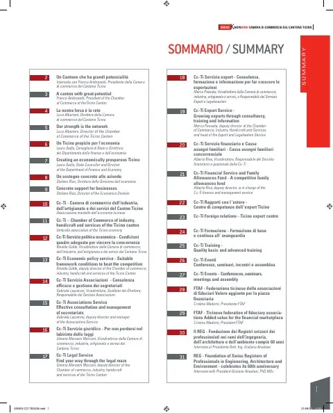

L'histoire de la psychiatrie publique tessinoise commence en 1898 avec l'hôpital neuropsychiatrique cantonal de Casvegno, à Mendrisio, mais c'est la loi sur l'assistance sociopsychiatrique qui, au 1er janvier 1985, a réuni tous les services dans l'Organisation sociopsychiatrique cantonale (OSC). Son directeur Michele Salvini présente un réseau qui a soigné 8385 personnes en 2011 : services médico-psychologiques et centres psycho-éducatifs pour les mineurs, services psychosociaux pour adultes, laboratoire de psychopathologie du travail ouvert en 2006, service de psychiatrie de liaison à Savosa et centres de jour. En 1994, l'hôpital est devenu la Clinique psychiatrique cantonale et le CARL, centre résidentiel pour patients chroniques. Certifiée ISO 9001:2008, l'OSC prépare son document programmatique 2013-2016.
Personnes citées
- Michele SalviniDirettore

Paru dans
Swiss Knowhow – Camera di commercio del Cantone Ticino (Cc-Ti) (2012)
2012 · page 64-65 · article original en italien
Lire l'article complet PDF